Lagos Agriculture
|
Agriculture
Afri Agri Products Limited is a foreign owned company based in Nigeria for exportation of agricultural commodities.  82, Allen Avenue, Ibilola Nelson House, Ikeja, Lagos, Nigeria 82, Allen Avenue, Ibilola Nelson House, Ikeja, Lagos, Nigeria 0708 849 6478, 0818 220 5553 0708 849 6478, 0818 220 5553XtraLarge Farms is revolutionizing agriculture in Nigeria by creating innovative platforms for passionate farmers and investors. Zowasel is an online platform that brings consumers and businesses together for the buying/selling of agricultural products and cash crops for export. Agric International Technology & Trade Nigeria Limited supply poultry and aquaculture products to arge, medium & and small farms, feed mills, nutrition & veterinary outlets. 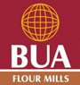 64 Adetokunbo Ademola, Victoria Island, Lagos Nigeria0709 802 7216, 01 461 0669, 01 461 0670 01 262 3535 01 262 3535BUA Food subsidiary of BUA Group that was incorporate for the purpose of refining imported and locally sourced raw sugar as well as milling of oil. Origin Tech Group Nigeria Limited engages in manufacturing of agricultural products. 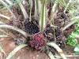 Best Alliance is a seedlings dealers in Nigeria, also dealers in farm land in Lagos and Ogun state. 6 Badejo Kalesanwo Street Matori Industrial Estate, Mushin, Lagos Nigeria01 291 859701 773 0904C. Woermann Agriculture & Forestry company provides range of equipment such as saw mills, brushcutters, chainsaws, spraying equipment and trimmers needed for agriculture and forestry. We manufacture and distribute packaged food products to African markets, addressing localized nutrition needs by offering affordable and fortified products. We offer good quality, inexpensive feed, and day-old-chicks to farmers. Enas Global Ventures Nigeria Limited is an agricultural service firm specializing in the distribution of agricultural products such as peanuts, zobo leave, hardwood charcoal and cocoa beans seed. 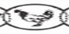 Livestock Feeds PLC offer services on production of wide range of livestock feeds such as chicken feeds, pig food, rabbit food and many others. Agro Hortiponics is an indigenous company with a deep understanding of the needs and challenges of the Nigerian farmers. Through in-depth research and development, we’ve focused on serving the needs of farmers. 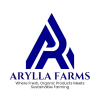 Arylla Farms, a subsidiary of Arylla Global Limited, is an indigenous-owned company dedicated to the production of high-quality, sustainable agricultural products. Our vision is to epitomize sustainable farming practices.  Devon King's is a vegetable cooking oil that's cholesterol-free, protein-rich, and contains vitamins A and E. It's used for cooking and frying, and is suitable for salads. 59A Adekunle Fajuyi Way Opp Shogunle Bus Stop Near PDP office, GRA Ikeja, Lagos Nigeria0701 799 2727, 0708 786 7861, 0806 381 19480802 666 5723Golden Oil Industries Limited is an edible oil's industry, a vegetable oil processing oil extracted from soy beans and palm nuts in Lagos. 127 Isolo Road Palm Avenue Bus-stop, Mushin, Lagos0803 326 2808, 0802 937 3076, 0805 216 8189Jovana Farms Nigeria Limited is an agri-project management company breeding and selling of agri-products like snail, goat, snail, mushroom, duck, guinea pig, boerboel dog, and grass-cutter. Nosak Farm Produce Limited specialize on production and distribution of vegetable oil and palm oil for the Nigerian food industries. 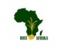 Rice Afrika Technologies Ltd provides innovative mechanization services and financial instruments to empower farmers, enhancing productivity and sustainability in agriculture. 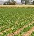 Abtop Agriculture is an agricultural company and establishment that specialize on the cultivation of several agricultural produce in Lagos. AgricHaven, formerly known as Agricpro Company is an agro-firm that deals on cultivation and supply of agricultural produce such as groundnut, soya beans, seeds, peanut and more products. Astoriatrade Limited offer livestock products sale and all agricultural and poultry products.We have In stocks agricultural feeds feeds for catfish, poultry feeds and drugs. Batisal Nigeria Limited is an agricultural company that based on farming business also supplies fertilizer and agrochemicals. Bolawole Enterprises Nigeria Limited (BENL) is a joint agricultural business that based on agricultural farm plantations, export of agricultural commodities such as cocoa beans, cocoa butter and importation of agricultural chemicals. 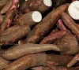 Dass Agric Services are into the cultivation and production of cassava, plantain, potatoes and other roots and tubers, and offers sales of pest control chemicals for farms too. 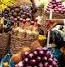 Divine Agric Resources Limited is an agricultural produce company operating in agricultural farms and crop cultivation based in Lagos. Alape Shopping Plaza LASU-Isheri Road, Iba Town Ojo, Lagos Nigeria0802 841 3111, 0816 744 6814Eagle Wins Export is a food and agro-allied company who deals in import and export of agricultural commodities. Farm Influent Plus Agro Hub provides agricultural services in plantain/banana and plantain suckers, ginger, garlic, mushroom, livestock production such as poultry, pig, rabbit and farm waste recycling. Farmcenta is an agri-tech platform that is improving rural farming with technology and addressing farmers critical farming needs such as mechanized tools, high yield seeds, training on smart farming techniques. Gphets And Agro Care Services is an agro allied company in Lagos offering range of services in pet care, rearing of livestock and veterinary services. Greenodus Concepts Limited is an upscale agro based business that specializes in production and distribution of foodstuff and other commodities / products both locally and internationally. Ladgroup Nigeria is a company specializes on supply and sales of agricultural products such as palm kernel Oil and sheanut oil. 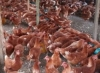 No 1 Gani street Ijegun Imore, New Site Satellite Town, Lagos Nigeria0803 331 6905, 0909 224 5349Macmed Integrated Farms is an agricultural establishment that basically specialize on the rearing of chicken and supply of eggs. 2ND Floor, Infinite Grace Plaza, Plot 4 Oyetubo Street, Off Obafemi Awolowo Way, Ikeja, Lagos0805 676 7819MAIGONA is a simple online platform that makes it possible for low income earners and unemployed citizens to participate in sponsoring farmers, even without money. 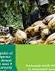 Mayfair Agro-Allied Nigeria is an agro allied company cultivating maize and also processes it into custard powder 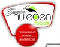 Specialized in agribusiness (farming, training, consultancy, exportation). We hygienically process and package finest raw materials from the farm into a healthy and nutritious foods. |
  |